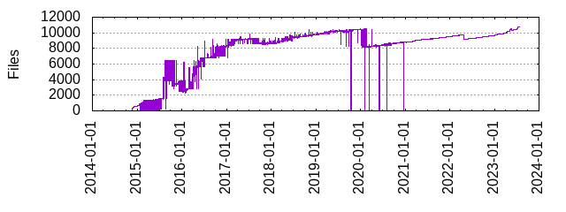

Files
- Total files
- 10766
- Total lines
- 2053758
- Average file size
- 11274.12 bytes

| Extension | Files (%) | Lines (%) | Lines/file |
|---|
| 3502 (32.53%) | 88160 (4.29%) | 25 |
| 0 | 6 (0.06%) | 131 (0.01%) | 21 |
| 1 | 7 (0.07%) | 145 (0.01%) | 20 |
| 3 | 1 (0.01%) | 20 (0.00%) | 20 |
| 4 | 4 (0.04%) | 80 (0.00%) | 20 |
| 5 | 1 (0.01%) | 20 (0.00%) | 20 |
| 9 | 2 (0.02%) | 40 (0.00%) | 20 |
| BUILD | 13 (0.12%) | 553 (0.03%) | 42 |
| Config | 1 (0.01%) | 8 (0.00%) | 8 |
| Dockerfile | 4 (0.04%) | 191 (0.01%) | 47 |
| StyleCop | 1 (0.01%) | 508 (0.02%) | 508 |
| attr | 1 (0.01%) | 1 (0.00%) | 1 |
| awk | 1 (0.01%) | 197 (0.01%) | 197 |
| base | 2 (0.02%) | 2365 (0.12%) | 1182 |
| bat | 22 (0.20%) | 1148 (0.06%) | 52 |
| bazel | 57 (0.53%) | 2987 (0.15%) | 52 |
| bazelrc | 9 (0.08%) | 323 (0.02%) | 35 |
| bin | 142 (1.32%) | 284 (0.01%) | 2 |
| bzl | 55 (0.51%) | 10237 (0.50%) | 186 |
| c | 440 (4.09%) | 83513 (4.07%) | 189 |
| c++ | 1 (0.01%) | 2681 (0.13%) | 2681 |
| cc | 1611 (14.96%) | 908326 (44.23%) | 563 |
| cfg | 200 (1.86%) | 6220 (0.30%) | 31 |
| clang | 3 (0.03%) | 5 (0.00%) | 1 |
| client | 1 (0.01%) | 28 (0.00%) | 28 |
| cmake | 18 (0.17%) | 851 (0.04%) | 47 |
| cnf | 9 (0.08%) | 180 (0.01%) | 20 |
| conf | 1 (0.01%) | 23 (0.00%) | 23 |
| core | 1 (0.01%) | 2484 (0.12%) | 2484 |
| cpp | 2 (0.02%) | 237 (0.01%) | 118 |
| crl | 5 (0.05%) | 67 (0.00%) | 13 |
| crt | 2 (0.02%) | 39 (0.00%) | 19 |
| cs | 31 (0.29%) | 3864 (0.19%) | 124 |
| csproj | 11 (0.10%) | 287 (0.01%) | 26 |
| css | 3 (0.03%) | 94 (0.00%) | 31 |
| dat | 1 (0.01%) | 0 (0.00%) | 0 |
| def | 1 (0.01%) | 286 (0.01%) | 286 |
| dict | 1 (0.01%) | 7 (0.00%) | 7 |
| example | 1 (0.01%) | 62 (0.00%) | 62 |
| fuzz | 1 (0.01%) | 44 (0.00%) | 44 |
| gcc | 3 (0.03%) | 18 (0.00%) | 6 |
| gemspec | 4 (0.04%) | 3029 (0.15%) | 757 |
| go | 13 (0.12%) | 1432 (0.07%) | 110 |
| google | 1 (0.01%) | 9 (0.00%) | 9 |
| googleapis | 1 (0.01%) | 54 (0.00%) | 54 |
| gradle | 6 (0.06%) | 172 (0.01%) | 28 |
| gyp | 1 (0.01%) | 2444 (0.12%) | 2444 |
| h | 1779 (16.52%) | 523156 (25.47%) | 294 |
| headers | 18 (0.17%) | 136 (0.01%) | 7 |
| hpp | 6 (0.06%) | 956 (0.05%) | 159 |
| html | 1 (0.01%) | 1 (0.00%) | 1 |
| imp | 1 (0.01%) | 9 (0.00%) | 9 |
| in | 13 (0.12%) | 102 (0.00%) | 7 |
| inc | 2 (0.02%) | 402 (0.02%) | 201 |
| include | 45 (0.42%) | 3229 (0.16%) | 71 |
| internal | 3 (0.03%) | 11053 (0.54%) | 3684 |
| jar | 2 (0.02%) | 718 (0.03%) | 359 |
| java | 11 (0.10%) | 686 (0.03%) | 62 |
| js | 14 (0.13%) | 361 (0.02%) | 25 |
| json | 67 (0.62%) | 18126 (0.88%) | 270 |
| key | 23 (0.21%) | 643 (0.03%) | 27 |
| lds | 1 (0.01%) | 6 (0.00%) | 6 |
| list | 1 (0.01%) | 22 (0.00%) | 22 |
| lock | 1 (0.01%) | 41 (0.00%) | 41 |
| lua | 4 (0.04%) | 1785 (0.09%) | 446 |
| m | 123 (1.14%) | 16166 (0.79%) | 131 |
| m4 | 2 (0.02%) | 1783 (0.09%) | 891 |
| md | 221 (2.05%) | 16041 (0.78%) | 72 |
| mm | 13 (0.12%) | 3114 (0.15%) | 239 |
| mod | 1 (0.01%) | 3 (0.00%) | 3 |
| modulemap | 2 (0.02%) | 5325 (0.26%) | 2662 |
| objc | 1 (0.01%) | 2442 (0.12%) | 2442 |
| old | 1 (0.01%) | 0 (0.00%) | 0 |
| patch | 8 (0.07%) | 299 (0.01%) | 37 |
| pbxproj | 15 (0.14%) | 8258 (0.40%) | 550 |
| pdf | 5 (0.05%) | 1769 (0.09%) | 353 |
| pem | 46 (0.43%) | 5464 (0.27%) | 118 |
| php | 207 (1.92%) | 27524 (1.34%) | 132 |
| phpt | 3 (0.03%) | 48 (0.00%) | 16 |
| plist | 23 (0.21%) | 876 (0.04%) | 38 |
| png | 25 (0.23%) | 2561 (0.12%) | 102 |
| podspec | 18 (0.17%) | 7466 (0.36%) | 414 |
| pro | 2 (0.02%) | 42 (0.00%) | 21 |
| properties | 4 (0.04%) | 46 (0.00%) | 11 |
| props | 7 (0.07%) | 106 (0.01%) | 15 |
| proto | 205 (1.90%) | 15308 (0.75%) | 74 |
| ps1 | 2 (0.02%) | 164 (0.01%) | 82 |
| pub | 1 (0.01%) | 4 (0.00%) | 4 |
| pxd | 2 (0.02%) | 204 (0.01%) | 102 |
| pxi | 58 (0.54%) | 7312 (0.36%) | 126 |
| py | 735 (6.83%) | 130115 (6.34%) | 177 |
| pyi | 17 (0.16%) | 382 (0.02%) | 22 |
| pyx | 4 (0.04%) | 609 (0.03%) | 152 |
| r0 | 4 (0.04%) | 0 (0.00%) | 0 |
| rb | 152 (1.41%) | 18931 (0.92%) | 124 |
| rc | 1 (0.01%) | 162 (0.01%) | 162 |
| rst | 23 (0.21%) | 942 (0.05%) | 40 |
| server | 1 (0.01%) | 28 (0.00%) | 28 |
| sh | 312 (2.90%) | 16276 (0.79%) | 52 |
| sln | 1 (0.01%) | 51 (0.00%) | 51 |
| snk | 2 (0.02%) | 3 (0.00%) | 1 |
| storyboard | 17 (0.16%) | 1596 (0.08%) | 93 |
| supp | 1 (0.01%) | 13 (0.00%) | 13 |
| svg | 1 (0.01%) | 4 (0.00%) | 4 |
| swift | 3 (0.03%) | 2149 (0.10%) | 716 |
| targets | 5 (0.05%) | 495 (0.02%) | 99 |
| template | 127 (1.18%) | 7394 (0.36%) | 58 |
| test | 11 (0.10%) | 7663 (0.37%) | 696 |
| toml | 1 (0.01%) | 51 (0.00%) | 51 |
| tpl | 2 (0.02%) | 56 (0.00%) | 28 |
| txt | 67 (0.62%) | 33893 (1.65%) | 505 |
| w32 | 1 (0.01%) | 1792 (0.09%) | 1792 |
| x | 1 (0.01%) | 20 (0.00%) | 20 |
| xcscheme | 19 (0.18%) | 1777 (0.09%) | 93 |
| xds_client | 1 (0.01%) | 41 (0.00%) | 41 |
| xds_server | 1 (0.01%) | 41 (0.00%) | 41 |
| xml | 17 (0.16%) | 3659 (0.18%) | 215 |
| xsl | 2 (0.02%) | 199 (0.01%) | 99 |
| yaml | 29 (0.27%) | 23740 (1.16%) | 818 |
| yml | 17 (0.16%) | 1565 (0.08%) | 92 |